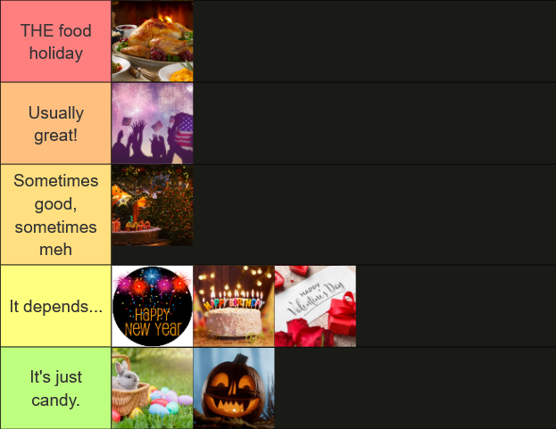

Holiday Tier List (food-wise, at least)

When it comes to holidays, quite a lot of them have some kind of food focus, no? I wanted to rank them based on how I personally feel the food quality is for each of them.
Going in order from top to bottom...
Thanksgiving
It is THE ultimate food holiday. When else do we get to engourge ourselves with more food than we probably should eat just because the holiday itself dictates it? The typical Thanksgiving foods (aside from turkey, I HATE turkey) like sweet potatoes, macaroni and cheese, mashed potatoes, and all of the others that grace the table and our mouths this fine holiday are usually all so good!
Fourth of July
This might be subjective or just based on my experiences, but since my family barbecues for this holiday regularly, it goes up there. I love the burgers, the hot dogs, grilled chicken, etc. It's a lot of meat, but I think it's okay in moderation.
Christmas
It's basically Thanksgiving 2 some years, and lazy dinner day on others. When it's Thanksgiving 2: Electric Boogaloo, it's at the top with the original Thanksgiving, but when it's regular dinner or takeout, it's lower ranked.
New Year's, Birthdays, and Valentine's Day
It really depends on effort and activities planned for these days. A small little note about New Year's: my family always buys the sparkling grape juice from the Welch brand to toast to the new year. It's not champagne or anything like that, but I honestly prefer it?
Easter and Halloween
This is once again just based on my personal experiences, but nothing happens aside from candy being on sale (or more expensive) around these holidays. My family unfortunately doesn't cook Easter dinner or anything like that, if it exists.